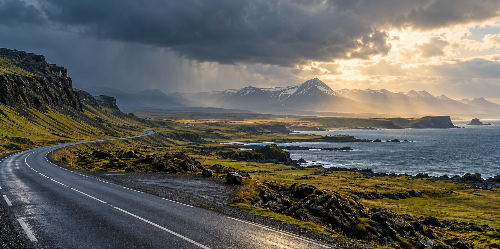
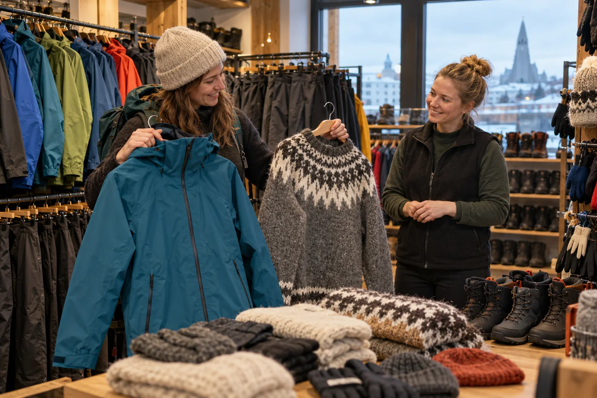
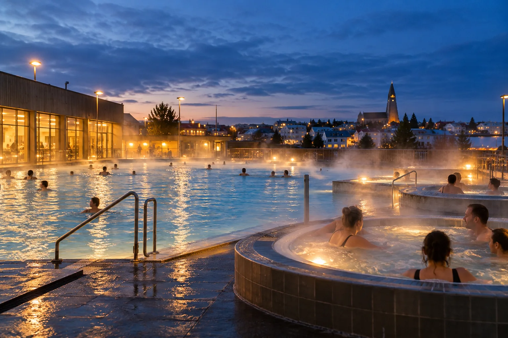
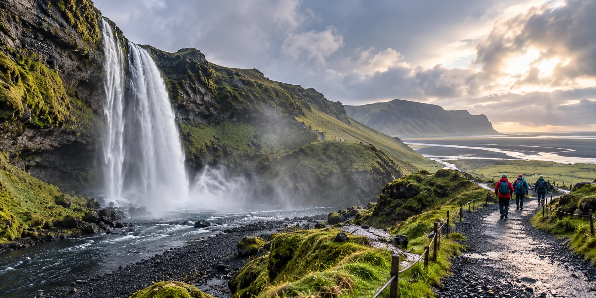

Iceland · researched October 2026
A practical handbook for your first trip to Iceland.
Iceland brings waterfalls, lava fields, glaciers, black-sand coast and hot water into one remarkable trip. This guide shares what recent travelers loved, what surprised them and what is easier to decide before you arrive.
AI-generated editorial illustration · MyFirstVisit draft
Why travelers love it
The landscape keeps changing before you finish talking about the last view.
Within a few days you can walk beside waterfalls, cross mossy lava fields, look over a glacier lagoon, stand above a black-sand coast and finish in naturally heated water. Many visitors find that the drives between famous places become part of the experience rather than empty travel time.
The same openness asks for a little preparation. Weather changes quickly, distances take longer than expected and rental-car decisions can be unfamiliar. A good plan handles those questions before the trip, then leaves enough room to enjoy what Iceland puts in front of you.
Basic information
Iceland at a glance
Iceland on one page
Best time to visit
Check every morning
Iceland in numbers
The volcano everyone has heard of

AI-generated editorial illustration · behavior shown is illustrative
Weather and clothing
What Icelandic weather feels like
The temperature can look mild while strong wind and cold rain make a stop feel much colder. Conditions may change several times in one day, and waterfall spray adds water even when the sky is clear.
- Pack a genuinely windproof, waterproof outer layer.
- Keep one dry layer reachable without unpacking the car.
- Check official weather and road conditions when the route changes.
Check today: Weather and warnings · Road conditions · Safetravel alerts
Friendly, practical advice
Things that are easier to understand before you arrive
An everyday ritual
Public pools and destination lagoons offer different kinds of Icelandic experience.
A neighborhood pool costs a fraction of a lagoon and teaches you the shower routine. A lagoon is a splurge worth planning. Most travelers are happiest knowing which one they are choosing.

AI-generated editorial illustration · not a specific facility
Choose a smaller map
Routes with room to notice where you are
These are planning shapes, not promises about current access or conditions.

Worth it for whom?
Places with a reason, rated for a first visit
Honest draft status
Useful now. Not pretending to be finished.
This prototype presents the research-backed Iceland draft. Native-language, destination, safety, media-rights, entrance-pin and accessibility reviews remain release gates. Current official conditions override every offline suggestion.